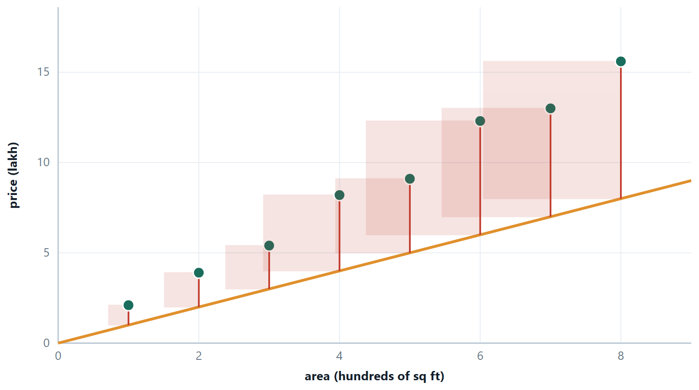
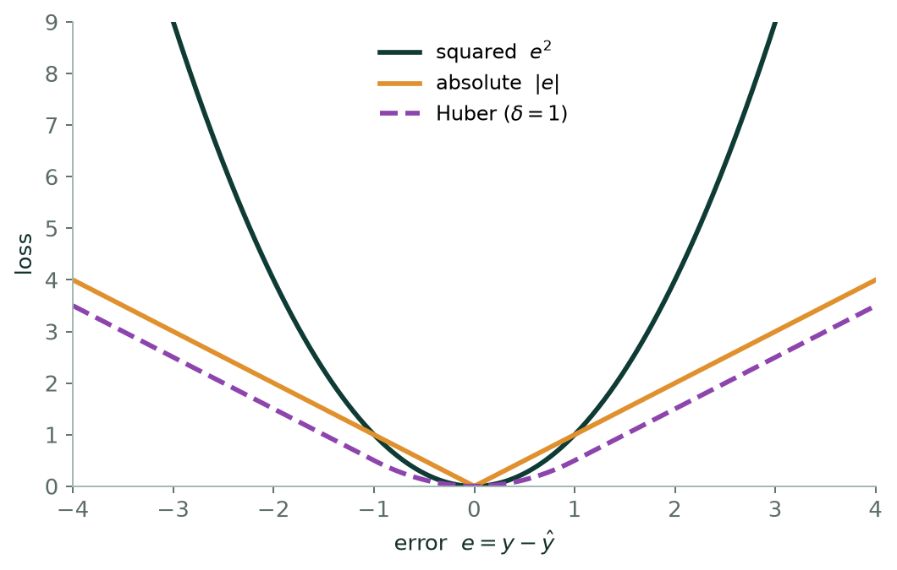
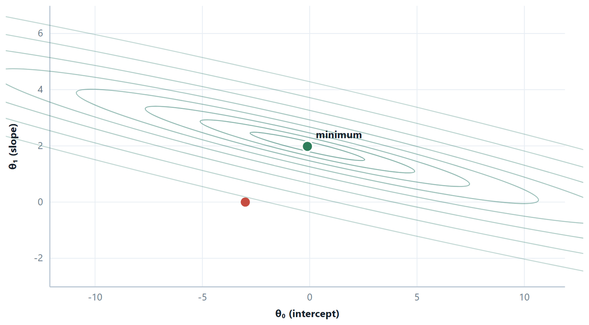
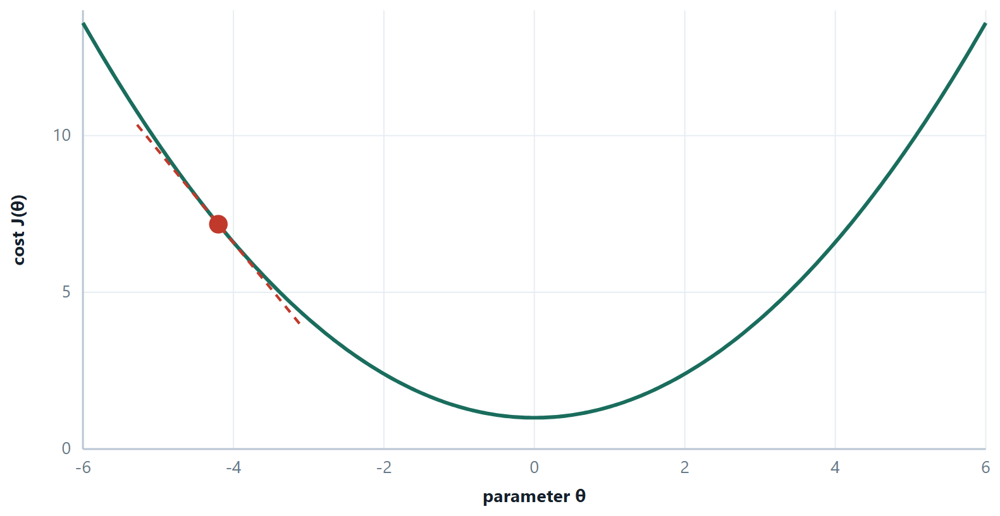
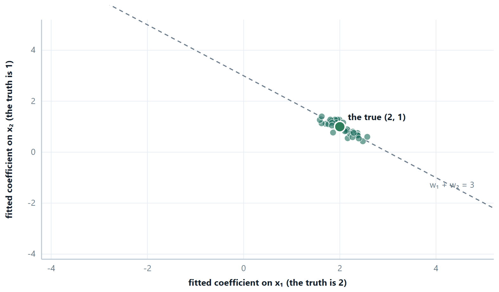
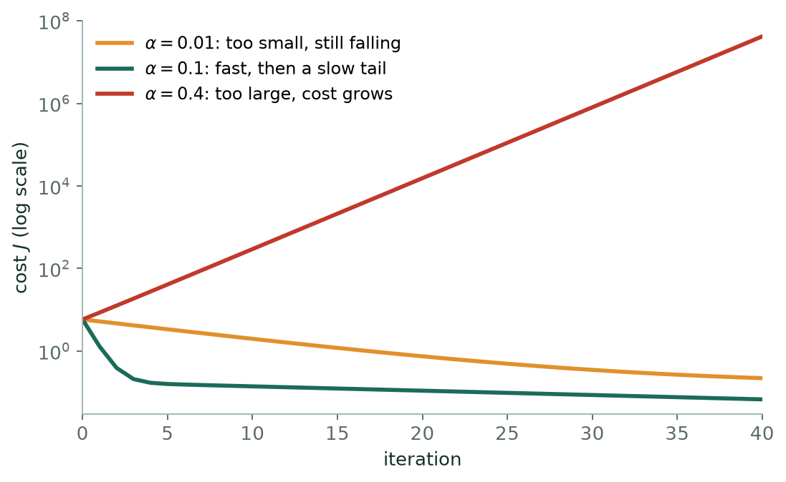

Chapter 4: Linear Regression and Gradient Descent¶
You have some flats with their areas and their sale prices, and you want a rule that turns an area into a price. Draw the points on paper; they scatter around something roughly straight. Lay a ruler across them. You have just done regression.
Everything else is making that precise. Which line? The one that makes the total error smallest — and once you write down what “error” means, the best line is determined, and there is a formula for it. How do you find it when there are twenty features and no formula is practical? You start anywhere and repeatedly step downhill on the error surface, which is gradient descent, and it is the same algorithm that trains every neural network in Unit 4. How do you stop the line from being too clever? That is regularisation. How do you know whether any of it worked? That is the metrics section.
This unit is the longest in the course for a reason: every idea in it reappears in Unit 4 with a different loss function bolted on the front. Learn the machinery here and classification becomes a variation rather than a new subject.
Learning outcomes of Unit 3
- Derive and apply the closed-form least-squares line, and read its slope and intercept in the language of the problem.
- Write down \(J(\theta )\), say why the error is squared and why the ½ is there, and describe the shape of the surface.
- Perform one step of gradient descent by hand, diagnose a learning rate from a cost curve, and explain why feature scaling changes the number of iterations but not the answer.
- Move to many variables in vector form, use the normal equation, and say when it is the wrong tool.
- Fit polynomial features and recognise the moment they start fitting noise.
- Explain bias and variance as a decomposition of expected error, and place any model on that axis.
- Apply ridge and lasso, explain geometrically why only lasso gives exact zeros, and choose \(\lambda\) honestly.
- Compute MSE, RMSE, \(\text{MAE}, R^{2}\) and adjusted \(R^{2}\), and argue for one of them given what a mistake costs.
4.1 Linear regression with one variable¶
Definition: Simple linear regression
\(h_{\theta }(x) = \theta _{0} + \theta _{1}x\), where \(\theta _{0}\) is the intercept (the prediction when \(x = 0\)) and \(\theta _{1}\) is the slope (the change in \(\hat{y}\) for a one-unit change in \(x\)). The residual for example i is \(e_{i} = y_{i} - \hat{y}_{i}\): what the model missed by, with sign.
“Best” has to be defined before it can be found. Least squares defines it as minimising the sum of squared residuals, and the minimum has a closed form.
the least-squares line, obtained by setting both partial derivatives of the cost to zero
The second formula says something worth noticing: the fitted line always passes through \((\bar{x}, \bar{y})\). Substitute \(x = \bar{x}\) and you get exactly \(\bar{y}\). It is a free check on any calculation you do by hand, and a useful mental image — the line pivots about the centre of the data as the slope changes.

Why squared, and not something else¶
Four reasons, in increasing order of depth. Squaring makes every error positive, so errors above and below the line cannot cancel — that rules out plain \(\sum e\). It is differentiable everywhere, unlike |e|, whose kink at zero makes calculus awkward. It punishes a few large misses more than many small ones, which is often what you want. And it has a probabilistic pedigree: minimising the squared error is exactly maximum likelihood estimation if the noise is Gaussian with constant variance.

Correlation is not regression¶
They are related and not the same. The correlation coefficient \(r\) is symmetric and unitless: it measures how tightly the points cluster about a line, and swapping \(x\) and \(y\) leaves it unchanged. The regression slope is directional and carries units — lakh per hundred square feet — and regressing \(x\) on \(y\) gives a different line from regressing \(y\) on \(x\). The link is \(\theta _{1} = r \cdot (s_{y}/s_{x})\), and \(r^{2}\) is exactly the \(R^{2}\) of the simple-regression fit.
Example 4.1: Deriving the least-squares line
Problem. Where do \(\theta _{1} = \sum (x-\bar{x})(y-\bar{y})/\sum (x-\bar{x})^{2}\) and \(\theta _{0} = \bar{y} - \theta _{1}\bar{x}\) come from? Nothing is assumed here except that we want the \(\theta\) making the total squared error smallest.
Step 1 — write down what is being minimised
\(J(\theta _{0}, \theta _{1}) = \sum _{i} (\theta _{0} + \theta _{1}x_{i} - y_{i})^{2}\). It is a smooth function of two variables and a sum of squares, so it is bounded below and has a minimum. At that minimum both partial derivatives are zero.
Step 2 — differentiate with respect to \(\theta _{0}\)
Each term is the square of something linear in \(\theta _{0}\), so the chain rule gives \(2(\theta _{0} + \theta _{1}x_{i} - y_{i}) \times 1\):
\(\partial J/\partial \theta _{0} = 2 \sum (\theta _{0} + \theta _{1}x_{i} - y_{i}) = 0\)
Divide by 2 and split the sum: \(m\theta _{0} + \theta _{1}\sum x_{i} - \sum y_{i} = 0\). Divide by \(m\) and use \(\bar{x} = \sum x_{i}/m\) and \(\bar{y} = \sum y_{i}/m\):
\(\theta _{0} + \theta _{1}\bar{x} = \bar{y}\), that is, \(\theta _{0} = \bar{y} - \theta _{1}\bar{x}\).
Read that again: it says the fitted line passes through \((\bar{x}, \bar{y})\). The second formula was never a separate fact — it is the first normal equation.
Step 3 — differentiate with respect to \(\theta _{1}\)
Now the inner derivative is \(x_{i}\):
\(\partial J/\partial \theta _{1} = 2 \sum (\theta _{0} + \theta _{1}x_{i} - y_{i}) x_{i} = 0\)
Step 4 — eliminate \(\theta _{0}\)
Substitute \(\theta _{0} = \bar{y} - \theta _{1}\bar{x}\) into step 3 and divide by 2:
\(\sum (\bar{y} - \theta _{1}\bar{x} + \theta _{1}x_{i} - y_{i}) x_{i} = 0\)
Group the \(\theta _{1}\) terms: \(\sum (y_{i} - \bar{y})x_{i} = \theta _{1} \sum (x_{i} - \bar{x})x_{i}\), so \(\theta _{1} = \sum (y_{i} - \bar{y})x_{i} / \sum (x_{i} - \bar{x})x_{i}\).
Step 5 — put it in the centred form
One identity finishes it: \(\sum (x_{i} - \bar{x}) = 0\), because \(\sum x_{i} = m\bar{x}\). Multiplying that zero by any constant is still zero, so we may subtract \(\bar{x}\sum (y_{i} - \bar{y})\) from the numerator and \(\bar{x}\sum (x_{i} - \bar{x})\) from the denominator without changing either. They become \(\sum (y_{i} - \bar{y})(x_{i} - \bar{x})\) and \(\sum (x_{i} - \bar{x})^{2}\).
Answer. \(\theta _{1} = \sum (x_{i} - \bar{x})(y_{i} - \bar{y}) / \sum (x_{i} - \bar{x})^{2}\) and \(\theta _{0} = \bar{y} - \theta _{1}\bar{x}\)
Comment. Two things fall out for free. The numerator is the sample covariance and the denominator the variance of \(x\), so \(\theta _{1} = r\cdot (s_{y}/s_{x})\) — the link between correlation and regression. And step 2 says the residuals sum to zero whenever the model has an intercept, which is the fastest check on any fit you do by hand.
4.2 The cost function¶
the mean squared error, halved
The 1/m makes the cost comparable across datasets of different size. The ½ is pure convenience: differentiating the square brings down a factor of 2 which the ½ cancels, so the gradient comes out clean. Neither changes where the minimum is, only what number sits there.
Key idea
\(J\) is a function of the parameters, not of \(x\). Every point \((\theta _{0}, \theta _{1})\) in the plane is one candidate line, and the height above it is how badly that line fits. For linear regression \(J\) is a convex quadratic bowl — one minimum, no local traps — which is why linear regression is a solved problem and neural network training is not.

4.3 Gradient descent¶
Definition: Batch gradient descent
Repeat until convergence, updating every parameter simultaneously:
\(\theta _{j}\) := \(\theta _{j} - \alpha \partial J/\partial \theta _{j}\)
For the squared cost above, the partial derivatives are
\(\partial J/\partial \theta _{0} = (1/m) \sum (h(x^{(i)}) - y^{(i)})\) \(\partial J/\partial \theta _{1} = (1/m) \sum (h(x^{(i)}) - y^{(i)}) x^{(i)}\)
Read the update in words: look at how wrong you are, and move each parameter in the direction that reduces that wrongness, by an amount proportional to how steeply it reduces it. The learning rate \(\alpha\) controls the size of the step and nothing else.
Simultaneous update
Compute both gradients from the current \(\theta\), then assign both. Computing the new \(\theta _{0}\) and then using it inside the gradient for \(\theta _{1}\) is a different algorithm that does not descend the cost you wrote down. It is the most common bug in a hand-written implementation, and it usually still converges — to the wrong place, or more slowly — which is what makes it hard to spot.

| Variant | Examples per update | Character |
|---|---|---|
| Batch | all \(m\) | smooth, exact descent; one update costs a full pass over the data |
| Stochastic (SGD) | 1 | noisy path, very fast per step, escapes shallow local minima, never quite settles |
| Mini-batch | 32–256 | the practical compromise, and what everything real uses |
Why scaling changes the number of iterations
If \(x_{1}\) runs to 2 000 and \(x_{2}\) to 5, the cost contours are a long thin ravine rather than round rings. The gradient points steeply across the ravine and only slightly along it, so descent zig-zags between the walls and creeps towards the minimum. Standardise both features and the ravine becomes a bowl: the gradient points at the minimum and descent walks straight there. The answer is identical either way — scaling changes the route, not the destination.
Here is the same descent written out, so that nothing is hidden. This is the entire algorithm — nine lines, and every one of them is a line of the derivation above.
# batch gradient descent from scratch, for one feature or many
def gradient_descent(X, y, alpha=0.05, iters=1000):
m, n = X.shape
X = np.c_[np.ones(m), X] # the x0 = 1 column, so the intercept is a weight
theta = np.zeros(n + 1)
history = []
for _ in range(iters):
error = X @ theta - y # shape (m,)
grad = (X.T @ error) / m # (1/m) sum (h - y) x
theta = theta - alpha * grad # every parameter updated together
history.append((error ** 2).sum() / (2 * m))
return theta, history
theta, J = gradient_descent(X_scaled, y, alpha=0.1)
# always plot J: it rises only when alpha is too large
Read theta \(=\) theta - alpha \(*\) grad once more
The whole vector is replaced at once — that is what a simultaneous update looks like in code, and writing the loop one element at a time is exactly where the classic bug gets in.
1 000 iterations is an optimistic default
When the features are correlated the valley is the long thin ravine described above, and descent crawls along it. On the diabetes dataset with \(\alpha = 0.1\) the coefficients are still 15.4 away from the exact least-squares answer after 1 000 iterations, 1.2 away after 4 000, and correct to four decimals only after about 20 000 — while the largest true coefficient is 37.7, so that first error is not small. And \(J\) looks flat long before \(\theta\) has settled, because the cost near a minimum changes quadratically while the parameters still have a long way to travel. Judge convergence by how much \(\theta\) moves, not by eye on the cost curve — and while \(n\) is small enough, check against the closed form.
Example 4.2: Deriving the gradient-descent update
Problem. Why is \(\partial J/\partial \theta _{1} = (1/m)\sum (h(x_{i}) - y_{i})x_{i}\), and what happened to the ½?
Step 1 — the cost, with its constants
\(J(\theta ) = (1/2m) \sum _{i} (h_{\theta }(x_{i}) - y_{i})^{2}\), with \(h_{\theta }(x) = \theta _{0} + \theta _{1}x\).
Step 2 — differentiate one term by the chain rule
Write \(e_{i} = h_{\theta }(x_{i}) - y_{i}\). Then \(\partial (e_{i}^{2})/\partial \theta _{j} = 2e_{i} \cdot \partial e_{i}/\partial \theta _{j}\).
The inner derivative is easy because \(h\) is linear: \(\partial e_{i}/\partial \theta _{0} = 1\) and \(\partial e_{i}/\partial \theta _{1} = x_{i}\). (\(y_{i}\) is data, not a variable, so it differentiates to zero.)
Step 3 — sum, and cancel the 2
\(\partial J/\partial \theta _{0} = (1/2m) \sum 2e_{i} = (1/m) \sum (h(x_{i}) - y_{i})\)
\(\partial J/\partial \theta _{1} = (1/2m) \sum 2e_{i}x_{i} = (1/m) \sum (h(x_{i}) - y_{i}) x_{i}\)
That is the whole job of the ½: it cancels the 2 that squaring produces. It moves nothing — the minimum of \(J\) sits at the same \(\theta\) either way — and it makes every formula after it cleaner.
Step 4 — the general case, in one line
With the convention \(x_{0} = 1\) the two formulas become one: \(\partial J/\partial \theta _{j} = (1/m) \sum (h(x_{i}) - y_{i}) x_{\text{ij}}\). Descend by subtracting \(\alpha\) times it, simultaneously for every \(j\).
Answer. \(\theta _{j}\) := \(\theta _{j} - (\alpha /m) \sum _{i} (h(x_{i}) - y_{i}) x_{\text{ij}}\)
Comment. Remember the shape: error \(\times\) input, averaged. You meet it twice more in this course — it is exactly the logistic-regression gradient with \(h\) redefined as \(\sigma (\theta ^{T}x)\), and it is the last step of back-propagation, where the error is \(\delta\) and the input is the activation arriving at that weight.
4.4 Many variables at once¶
with the convention \(x_{0} = 1\), so the intercept is just another weight
The \(x_{0} = 1\) trick is not cosmetic — it lets one matrix expression cover the intercept and every slope together, which is what makes the vector form and the normal equation possible.
Definition: The normal equation
\(\theta = (X^{T}X)^{-1}X^{T}y\), where \(X\) is the \(m \times (n+1)\) design matrix whose first column is all ones.
It is exact, needs no learning rate and no iteration, and requires no feature scaling. Its cost is the matrix inversion: roughly \(O(n^{3})\), which is nothing for \(n = 20\) and impossible for \(n = 50 000\). The crossover in practice is around \(n \approx 10^{4}\).
\(X^{T}X\) fails to be invertible in exactly two situations, and both are diagnosable. The first is redundant features: one column is a linear combination of others — height in cm beside height in inches, or all \(c\) one-hot columns kept alongside the intercept. The second is more features than examples, \(n > m\). The fixes are to drop the redundancy, collect more data, or add a ridge penalty, which makes \(X^{T}X + \lambda I\) invertible for every \(\lambda > 0\).
Reading coefficients, and one trap¶
Each \(\theta _{j}\) is a partial effect: the change in \(\hat{y}\) for a one-unit change in \(x_{j}\) with every other feature held fixed. Two warnings follow. Coefficient magnitudes cannot be compared unless the features are standardised — a feature measured in thousands gets a small coefficient regardless of its importance. And when features are correlated, “holding the others fixed” is partly fictional. Area and bedrooms move together, so the split of credit between their coefficients becomes unstable. Small changes in the data can then swing them wildly, and occasionally even reverse a sign. That instability is multicollinearity, and it is one of the two things ridge regression was invented to fix.
# Unit 3, in the form you will actually write it
import numpy as np
from sklearn.linear_model import LinearRegression
from sklearn.model_selection import train_test_split
from sklearn.metrics import mean_squared_error, mean_absolute_error, r2_score
X_tr, X_te, y_tr, y_te = train_test_split(X, y, test_size=0.25, random_state=42)
reg = LinearRegression().fit(X_tr, y_tr) # solves the normal equation internally
print(reg.coef_, reg.intercept_) # the slopes, and the intercept apart
pred = reg.predict(X_te)
mse = mean_squared_error(y_te, pred)
print("MSE", mse, "RMSE", np.sqrt(mse),
"MAE", mean_absolute_error(y_te, pred),
"R2", r2_score(y_te, pred))
LinearRegression does not iterate — it solves the normal equations, through a numerically safer routine than forming an explicit inverse. Notice that coef_ and intercept_ are kept apart: that is the library reminding you \(\theta _{0}\) is not penalised once you move to ridge.
Example 4.3: Deriving the normal equation
Problem. Show that the \(\theta\) minimising \(\Vert X\theta - y\Vert ^{2}\) is \(\theta = (X^{T}X)^{-1}X^{T}y\), and say exactly when that inverse fails to exist.
Step 1 — the cost in matrix form
Stack the residuals into a vector \(r = X\theta - y\). The sum of squared residuals is the dot product of \(r\) with itself: \(J(\theta ) = r^{T}r = (X\theta - y)^{T}(X\theta - y)\).
Step 2 — expand
\(J = \theta ^{T}X^{T}X\theta - \theta ^{T}X^{T}y - y^{T}X\theta + y^{T}y\)
The two middle terms are scalars, and a scalar equals its own transpose, so \(\theta ^{T}X^{T}y = y^{T}X\theta\) and they combine: \(J = \theta ^{T}X^{T}X\theta - 2\theta ^{T}X^{T}y + y^{T}y\).
Step 3 — differentiate with respect to the vector \(\theta\)
Two standard identities are all that is needed: \(\partial (\theta ^{T}A\theta )/\partial \theta = 2A\theta\) for symmetric A — and \(X^{T}X\) is symmetric, since \((X^{T}X)^{T} = X^{T}X\) — and \(\partial (\theta ^{T}b)/\partial \theta = b\). The last term has no \(\theta\) in it. So \(\nabla J = 2X^{T}X\theta - 2X^{T}y\).
Step 4 — set it to zero
\(X^{T}X\theta = X^{T}y\) — the normal equations. When \(X^{T}X\) is invertible, \(\theta = (X^{T}X)^{-1}X^{T}y\). It is a minimum and not a maximum because the second derivative \(2X^{T}X\) is positive semi-definite: \(v^{T}X^{T}\text{Xv} = \Vert \text{Xv}\Vert ^{2} \ge 0\) for every \(v\).
Step 5 — when the inverse does not exist
\(\Vert \text{Xv}\Vert ^{2} = 0\) for some \(v\) ≠ 0 exactly when the columns of \(X\) are linearly dependent, which happens in precisely two situations: a redundant feature (height in cm beside height in inches; all \(c\) one-hot columns kept alongside the intercept), or \(n > m\), since \(n + 1\) columns cannot be independent in \(m\) dimensions.
A ridge penalty replaces \(X^{T}X\) by \(X^{T}X + \lambda I\), and \(v^{T}(X^{T}X + \lambda I)v = \Vert \text{Xv}\Vert ^{2} + \lambda \Vert v\Vert ^{2} > 0\) for every \(v\) ≠ 0 and every \(\lambda > 0\). So ridge always has a unique solution, even where ordinary least squares has none — the second, less advertised reason to use it.
Answer. \(\theta = (X^{T}X)^{-1}X^{T}y\), singular exactly when the columns of \(X\) are linearly dependent
Comment. The geometric reading is worth carrying away. \(X^{T}X\theta = X^{T}y\) says \(X^{T}(X\theta - y) = 0\): the residual vector is orthogonal to every column of \(X\). Least squares projects \(y\) perpendicularly onto the space the features can span, and what is left over is, by construction, the part no feature could have explained.

That is the whole of multicollinearity in one picture. The data has seen \(x_{1}\) and \(x_{2}\) rise and fall together, so it has no way to tell which of them earned the weight. It knows only what they earn together — which is why the sum is pinned down while each part is not, and why the forecast survives even when the explanation does not.
4.5 Further topics¶
Choosing the learning rate and reading the cost curve¶
The learning rate is the one number in gradient descent that you must choose, and the cost-versus-iteration curve is the instrument that tells you whether you chose well. Plot it on every run. The figure shows the descent on the three points \((1, 1), (2, 3), (3, 5)\) of the worked examples, which lie exactly on \(y = 2x - 1\), so the true minimum cost is zero. The three curves use \(\alpha = 0.01, 0.1\) and \(0.4\), and the vertical axis is logarithmic so that all three fit.

Three shapes are worth recognising. A curve that falls but has barely bent after many iterations means \(\alpha\) is too small: the method is correct and merely slow. A curve that falls quickly and then flattens is the good case. A curve that rises, or zig-zags upwards, means \(\alpha\) is too large, and on a log scale a diverging run appears as a straight line climbing, because the cost is multiplied by the same factor at every step.
The reason for the boundary between the second and third shapes is the one-parameter argument of the worked example on three learning rates, carried to many parameters. The Hessian of the cost is \(X^{T}X/m\), a symmetric matrix with non-negative eigenvalues, and along the direction belonging to an eigenvalue \(\lambda\) each iteration multiplies the remaining distance to the minimum by \(1 - \alpha\lambda\). Descent is stable only if every such factor lies between \(-1\) and \(1\), that is
For these three points the eigenvalues of \(X^{T}X/m\) are \(5.546\) and \(0.120\), so the threshold is \(2/5.546 = 0.361\): \(\alpha = 0.1\) is safe and \(\alpha = 0.4\) is not. The small eigenvalue explains the slow tail. At \(\alpha = 0.1\) its direction shrinks by only \(1 - 0.1(0.120) = 0.988\) per iteration, so after forty iterations about \(0.988^{40} = 62\%\) of the distance along it remains. The ratio of the two eigenvalues, \(5.546/0.120 = 46\), is the elongation of the valley.
Centring the feature shows what scaling does. Replacing \(x = 1, 2, 3\) by \(x - 2 = -1, 0, 1\) changes nothing about the model, only about the surface: the eigenvalues become \(1\) and \(0.667\), a ratio of \(1.5\), and the valley is almost a bowl. With the same \(\alpha = 0.1\) and forty iterations the cost reaches \(0.0063\) instead of \(0.0676\). This is the precise sense in which scaling speeds descent: it shrinks the ratio of the largest eigenvalue to the smallest, which is the number that decides how many iterations are needed.
Epochs, stopping rules and learning-rate schedules¶
One epoch is one full pass through the training data. Batch descent makes one update per epoch, stochastic descent makes \(m\) updates per epoch, and mini-batch descent makes about \(m\) divided by the batch size. Training length is therefore usually quoted in epochs, not in updates, so that runs with different batch sizes can be compared.
Gradient descent needs a rule for when to stop, and three are in common use. The simplest is a fixed maximum number of iterations or epochs, which guarantees termination but not accuracy. The second is a tolerance: stop when the cost improves by less than a small \(\varepsilon\) between iterations, or better, when the parameters themselves move by less than \(\varepsilon\), since the cost flattens long before the parameters settle (the warning earlier in this chapter). The third, used when a validation set is available, is early stopping: watch the error on the validation set and stop when it stops improving, even though the training error is still falling. It is a form of regularisation, taken up in the next chapter.
A constant \(\alpha\) is a compromise between speed early and precision late. In stochastic and mini-batch descent it is a real problem, because the noise in each gradient stops \(\theta\) from settling however long you run. A learning-rate schedule lowers \(\alpha\) as training proceeds, for example \(\alpha_{t} = \alpha_{0}/(1 + kt)\) after \(t\) updates, or by halving it every fixed number of epochs. Large steps early cover the ground quickly and small steps late average out the noise. For batch descent on a convex cost with a well-chosen constant \(\alpha\) no schedule is needed.
Categorical predictors as dummy variables¶
Regression needs numbers, but some predictors are categories: whether a flat has a lift, the city a house is in. A dummy variable codes a two-valued category as 0 or 1, for example \(d = 1\) if the flat has a lift and \(d = 0\) otherwise. In the model \(\hat{y} = \theta_{0} + \theta_{1}x + \theta_{2}d\) the coefficient \(\theta_{2}\) is the shift in the prediction between the two groups at the same \(x\): the line for flats with a lift is the line for flats without one moved up or down by \(\theta_{2}\). The slope \(\theta_{1}\) is shared.
A category with \(c\) values needs \(c - 1\) dummy columns, not \(c\). The omitted category becomes the baseline absorbed in the intercept, and each coefficient measures the difference from it. If all \(c\) columns are kept beside the intercept, they add up to the column of ones: one column is then a linear combination of the others and \(X^{T}X\) is singular, which is the redundant-feature case of Section 4.4, usually called the dummy-variable trap. Libraries avoid it by dropping the first category (drop="first" in the scikit-learn one-hot encoder), or the penalty of ridge regression removes the ambiguity if all columns are kept.
Dummy variables shift the intercept only. If the slope should also differ between the groups, the model needs the product \(x \cdot d\) as a further feature, an interaction term, which the next chapter takes up with the other ways of enlarging the feature set.
4.6 Worked examples¶
The examples below work through the calculations of this chapter in full. Try each one on paper before reading the steps.
Example 4.4: Fit a line and interpret it
Problem. Hours studied \(x = 1, 2, 3, 4, 5\) with marks \(y = 52, 55, 61, 64, 68\). Fit the least-squares line, predict for 6 hours, and state what the slope means.
Step 1 — the means
\(\bar{x} = 15/5 = 3, \bar{y} = 300/5 = 60\)
Step 2 — the two sums
| \(x\) | \(y\) | \(x-\bar{x}\) | \(y-\bar{y}\) | \((x-\bar{x})(y-\bar{y})\) | \((x-\bar{x})^{2}\) |
|---|---|---|---|---|---|
| 1 | 52 | −2 | −8 | 16 | 4 |
| 2 | 55 | −1 | −5 | 5 | 1 |
| 3 | 61 | 0 | 1 | 0 | 0 |
| 4 | 64 | 1 | 4 | 4 | 1 |
| 5 | 68 | 2 | 8 | 16 | 4 |
| \(\sum\) | 41 | 10 |
Step 3 — the coefficients
\(\theta _{1} = 41/10 = 4.1 \cdot \theta _{0} = 60 - 4.1(3) = 60 - 12.3 = 47.7\)
Check: does the line pass through (3, 60)? \(47.7 + 4.1(3) = 60\). ✓
Step 4 — predict and interpret
\(\hat{y}(6) = 47.7 + 4.1(6) = 72.3\) marks
The slope says: each additional hour of study is associated with about 4.1 more marks, over the range 1–5 hours observed. The intercept, 47.7, is the predicted mark for zero hours, which here is inside a plausible range. In many problems it is not: the intercept extrapolates to a value of \(x\) that never occurs, and then it should not be interpreted at all.
Note “associated with”, not “causes”. And note that predicting for \(x = 20\) hours would be extrapolation far outside the data, where a straight line has no authority whatsoever — it would predict 129 marks.
Answer. \(\hat{y} = 47.7 + 4.1x\); \(\hat{y}(6) = 72.3\)
Example 4.5: Two steps of gradient descent, in full
Problem. Data (1, 2), (2, 4), (3, 6). Start at \(\theta _{0} = \theta _{1} = 0\) with \(\alpha = 0.1\) and \(J = (1/2m)\sum (h - y)^{2}\). Perform two iterations.
Iteration 1 — predictions and errors
With \(\theta = (0, 0), h = 0\) for every point, so the errors \(h - y\) are −2, −4, −6.
\(\partial J/\partial \theta _{0} = (-2 - 4 - 6)/3 =\) −12/3 \(= -4\)
\(\partial J/\partial \theta _{1} =\) ((−2)(1) + (−4)(2) + (−6)(3))/3 \(= (-2 - 8 - 18)/3 =\) −28/3 \(= -9.333\)
Iteration 1 — update, both together
\(\theta _{0}\) := \(0 - 0.1(-4) = 0.4 \cdot \theta _{1}\) := \(0 - 0.1(-9.333) = 0.9333\)
Both gradients were negative, so both parameters increased. Gradient descent subtracts the gradient; when the gradient is negative that is an increase.
Iteration 2 — predictions with the new \(\theta\)
\(h(1) = 0.4 + 0.9333 = 1.3333\), error −0.6667
\(h(2) = 0.4 + 1.8667 = 2.2667\), error −1.7333
\(h(3) = 0.4 + 2.8 = 3.2\), error −2.8
\(\partial J/\partial \theta _{0} = (-0.6667 - 1.7333 - 2.8)/3 =\) −5.2/3 \(= -1.7333\)
\(\partial J/\partial \theta _{1} =\) ((−0.6667)(1) + (−1.7333)(2) + (−2.8)(3))/3 \(= (-0.6667 - 3.4667 - 8.4)/3 = -4.1778\)
Iteration 2 — update
\(\theta _{0}\) := \(0.4 + 0.17333 = 0.5733 \cdot \theta _{1}\) := \(0.9333 + 0.41778 = 1.3511\)
Answer. After two steps: \(\theta _{0} \approx 0.573, \theta _{1} \approx 1.351\)
Comment. The exact answer here is \(\theta _{0} = 0, \theta _{1} = 2\), and the descent is heading towards it — \(\theta _{1}\) is climbing steadily while \(\theta _{0}\) overshoots slightly and will come back down. Note also that the gradients shrank between the two iterations, from −4 to −1.73: as the fit improves, the steps get smaller on their own. You never need to reduce \(\alpha\) by hand for this reason.
The first two examples are least-squares lines, the next two follow gradient descent by hand, and the last three solve normal equations: for a straight line, for two predictors and for a quadratic.
Example 4.6: A line, its residuals and its \(R^{2}\)
Problem. A firm records the amount spent on advertising (\(x\), in lakh) and the sales achieved (\(y\), in lakh) over five months.
| \(x\) | 1 | 2 | 3 | 4 | 5 |
|---|---|---|---|---|---|
| \(y\) | 2 | 4 | 5 | 4 | 5 |
Fit \(y = \theta_{0} + \theta_{1}x\) by least squares, estimate the sales when \(x = 6\), and compute the coefficient of determination \(R^{2}\).
Step 1 — means and the two sums
\(\bar{x} = 15/5 = 3, \ \bar{y} = 20/5 = 4\)
| \(x\) | \(y\) | \(x-\bar{x}\) | \(y-\bar{y}\) | \((x-\bar{x})(y-\bar{y})\) | \((x-\bar{x})^{2}\) |
|---|---|---|---|---|---|
| 1 | 2 | −2 | −2 | 4 | 4 |
| 2 | 4 | −1 | 0 | 0 | 1 |
| 3 | 5 | 0 | 1 | 0 | 0 |
| 4 | 4 | 1 | 0 | 0 | 1 |
| 5 | 5 | 2 | 1 | 2 | 4 |
| \(\sum\) | 6 | 10 |
Step 2 — the line
\(\theta_{1} = 6/10 = 0.6, \quad \theta_{0} = 4 - 0.6(3) = 2.2\), so \(\hat{y} = 2.2 + 0.6x\).
At \(x = 6\): \(\hat{y} = 2.2 + 0.6(6) = 5.8\).
Step 3 — residuals
| \(x\) | \(y\) | \(\hat{y}\) | \(e = y - \hat{y}\) | \(e^{2}\) | \((y-\bar{y})^{2}\) |
|---|---|---|---|---|---|
| 1 | 2 | 2.8 | −0.8 | 0.64 | 4 |
| 2 | 4 | 3.4 | 0.6 | 0.36 | 0 |
| 3 | 5 | 4.0 | 1.0 | 1.00 | 1 |
| 4 | 4 | 4.6 | −0.6 | 0.36 | 0 |
| 5 | 5 | 5.2 | −0.2 | 0.04 | 1 |
| \(\sum\) | 0 | 2.40 | 6 |
The residuals sum to zero, as they must for a line with an intercept.
Step 4 — \(R^{2}\)
\(\text{SS}_{\text{res}} = 2.40, \ \text{SS}_{\text{tot}} = 6\), so \(R^{2} = 1 - 2.40/6 = 1 - 0.4 = 0.6\).
Answer. \(\hat{y} = 2.2 + 0.6x\); the estimate at \(x = 6\) is 5.8 lakh; \(R^{2} = 0.6\).
Comment. The line explains 60% of the variation in sales. For a single predictor \(R^{2}\) equals the square of the correlation coefficient: \(r = 6/\sqrt{10 \times 6} = 0.7746\) and \(r^{2} = 36/60 = 0.6\). The estimate at \(x = 6\) lies just one step outside the data, which is mild extrapolation; the further from \(1\)–\(5\) the less it can be trusted.
Example 4.7: Unequal spacing, MSE and an estimate far outside the data
Problem. Four observations are given.
| \(x\) | 2 | 6 | 7 | 11 |
|---|---|---|---|---|
| \(y\) | 25 | 24 | 28 | 29 |
Find the least-squares line, compute the MSE and \(R^{2}\), and predict \(y\) at \(x = 18\).
Step 1 — means and deviations
\(\bar{x} = 26/4 = 6.5, \ \bar{y} = 106/4 = 26.5\)
| \(x-\bar{x}\) | −4.5 | −0.5 | 0.5 | 4.5 |
|---|---|---|---|---|
| \(y-\bar{y}\) | −1.5 | −2.5 | 1.5 | 2.5 |
| product | 6.75 | 1.25 | 0.75 | 11.25 |
| \((x-\bar{x})^{2}\) | 20.25 | 0.25 | 0.25 | 20.25 |
\(\sum(x-\bar{x})(y-\bar{y}) = 20, \quad \sum(x-\bar{x})^{2} = 41\)
Step 2 — coefficients
\(\theta_{1} = 20/41 = 0.4878, \quad \theta_{0} = 26.5 - 0.4878(6.5) = 26.5 - 3.1707 = 23.3293\)
Step 3 — fitted values and residuals
| \(x\) | \(y\) | \(\hat{y}\) | \(e\) | \(e^{2}\) |
|---|---|---|---|---|
| 2 | 25 | 24.3049 | 0.6951 | 0.4832 |
| 6 | 24 | 26.2561 | −2.2561 | 5.0899 |
| 7 | 28 | 26.7439 | 1.2561 | 1.5778 |
| 11 | 29 | 28.6951 | 0.3049 | 0.0930 |
| \(\sum\) | 0 | 7.2439 |
\(\text{MSE} = 7.2439/4 = 1.811\)
Step 4 — \(R^{2}\)
\(\text{SS}_{\text{tot}} = 2.25 + 6.25 + 2.25 + 6.25 = 17\), so \(R^{2} = 1 - 7.2439/17 = 1 - 0.4261 = 0.574\).
Step 5 — the prediction
\(\hat{y}(18) = 23.3293 + 0.4878(18) = 23.3293 + 8.7805 = 32.11\)
Answer. \(\hat{y} = 23.33 + 0.4878x\); MSE \(= 1.811\); \(R^{2} = 0.574\); \(\hat{y}(18) \approx 32.1\).
Comment. The data stop at \(x = 11\), so \(x = 18\) is far beyond them and the number 32.1 has no support from the data. With \(R^{2} = 0.57\) even the fit inside the range leaves almost half the variation unexplained. Note too that the means are not whole numbers here; the table of deviations makes the arithmetic painless all the same.
Example 4.8: Two iterations of gradient descent, with the cost tracked
Problem. Fit \(h(x) = \theta_{0} + \theta_{1}x\) to the points \((1, 1), (2, 3), (3, 5)\) by batch gradient descent with \(J = (1/2m)\sum(h - y)^{2}\). Start at \(\theta_{0} = \theta_{1} = 0\), take \(\alpha = 0.1\) and perform two iterations, showing \(J\) each time.
Step 1 — the starting cost
At \(\theta = (0, 0)\) every prediction is 0, so the errors \(h - y\) are \(-1, -3, -5\).
\(J = \dfrac{1}{6}\left[(-1)^{2} + (-3)^{2} + (-5)^{2}\right] = \dfrac{35}{6} = 5.8333\)
Step 2 — iteration 1: gradients and update
\(\partial J/\partial\theta_{0} = (-1 - 3 - 5)/3 = -3.0000\)
\(\partial J/\partial\theta_{1} = \left[(-1)(1) + (-3)(2) + (-5)(3)\right]/3 = -22/3 = -7.3333\)
\(\theta_{0} := 0 - 0.1(-3.0000) = 0.3000, \qquad \theta_{1} := 0 - 0.1(-7.3333) = 0.7333\)
Step 3 — iteration 1: the new cost
Predictions \(h = 1.0333, 1.7667, 2.5000\); errors \(0.0333, -1.2333, -2.5000\).
\(J = (0.0011 + 1.5211 + 6.2500)/6 = 7.7722/6 = 1.2954\)
Step 4 — iteration 2: gradients and update
\(\partial J/\partial\theta_{0} = (0.0333 - 1.2333 - 2.5000)/3 = -3.7000/3 = -1.2333\)
\(\partial J/\partial\theta_{1} = \left[(0.0333)(1) + (-1.2333)(2) + (-2.5000)(3)\right]/3 = -9.9333/3 = -3.3111\)
\(\theta_{0} := 0.3000 + 0.1(1.2333) = 0.4233, \qquad \theta_{1} := 0.7333 + 0.1(3.3111) = 1.0644\)
Step 5 — iteration 2: the new cost
Predictions \(h = 1.4878, 2.5522, 3.6167\); errors \(0.4878, -0.4478, -1.3833\).
\(J = (0.2379 + 0.2005 + 1.9136)/6 = 2.3520/6 = 0.3920\)
Answer. After two iterations \(\theta_{0} = 0.4233\) and \(\theta_{1} = 1.0644\); the cost has fallen \(5.8333 \to 1.2954 \to 0.3920\).
Comment. The three points lie exactly on \(y = 2x - 1\), so the true minimum is \(\theta = (-1, 2)\) with \(J = 0\). The cost drops fast at first and then slows: the intercept has to travel from \(0.42\) to \(-1\) and does so slowly, because the unscaled column \(x = 1, 2, 3\) makes the cost surface a narrow valley. Even after forty iterations at this \(\alpha\) the cost is still \(0.068\). Watching \(J\) fall is the check that \(\alpha\) is acceptable; watching \(\theta\) settle is the check that the algorithm has finished.
Example 4.9: Three learning rates on one function
Problem. Minimise \(J(\theta) = \theta^{2} - 4\theta + 5\) by gradient descent from \(\theta = 0\), using the update \(\theta := \theta - \alpha\,dJ/d\theta\). Compare \(\alpha = 0.1, 0.5\) and \(1.1\) over three iterations, and say for which \(\alpha\) the method converges.
Step 1 — the update rule and the exact minimum
\(dJ/d\theta = 2\theta - 4\), so \(\theta_{\text{new}} = \theta - \alpha(2\theta - 4) = (1 - 2\alpha)\theta + 4\alpha\).
Setting \(2\theta - 4 = 0\) gives the minimiser \(\theta^{*} = 2\), with \(J(2) = 4 - 8 + 5 = 1\).
Step 2 — a one-line description of every iteration
Subtract 2 from both sides of the update:
\(\theta_{\text{new}} - 2 = (1 - 2\alpha)(\theta - 2)\)
So each step multiplies the distance to the minimum by \(1 - 2\alpha\). Also \(J(\theta) = (\theta - 2)^{2} + 1\), which makes the cost easy to read off.
Step 3 — the three runs
| iteration | \(\alpha = 0.1\): \(\theta\) | \(J\) | \(\alpha = 0.5\): \(\theta\) | \(J\) | \(\alpha = 1.1\): \(\theta\) | \(J\) |
|---|---|---|---|---|---|---|
| 0 | 0.0000 | 5.0000 | 0.0000 | 5.0000 | 0.0000 | 5.0000 |
| 1 | 0.4000 | 3.5600 | 2.0000 | 1.0000 | 4.4000 | 6.7600 |
| 2 | 0.7200 | 2.6384 | 2.0000 | 1.0000 | −0.8800 | 9.2944 |
| 3 | 0.9760 | 2.0486 | 2.0000 | 1.0000 | 5.4560 | 12.9439 |
The multipliers are \(1 - 0.2 = 0.8\), \(1 - 1 = 0\) and \(1 - 2.2 = -1.2\). For \(\alpha = 0.1\) the distance falls \(2 \to 1.6 \to 1.28 \to 1.024\). For \(\alpha = 0.5\) it is wiped out in one step. For \(\alpha = 1.1\) it goes \(-2 \to 2.4 \to -2.88 \to 3.456\): the sign flips each time and the size grows.
Step 4 — when does it converge?
The distance shrinks exactly when \(|1 - 2\alpha| < 1\), that is \(0 < \alpha < 1\). The best choice is \(\alpha = 0.5\), which equals \(1/J''\) since \(J'' = 2\). At \(\alpha = 1\) the multiplier is \(-1\) and \(\theta\) bounces between 0 and 4 for ever.
Answer. The minimiser is \(\theta^{*} = 2\). \(\alpha = 0.1\) converges slowly, \(\alpha = 0.5\) converges in one step, and \(\alpha = 1.1\) diverges, with \(\theta\) oscillating about 2 and \(J\) increasing at every step.
Comment. This one-parameter case is the whole story in miniature. For linear regression the same argument runs along each principal direction of the cost surface, with \(J''\) replaced by the eigenvalues of \(X^{T}X/m\): descent is stable only if \(\alpha\) is below \(2\) divided by the largest eigenvalue, and the smallest eigenvalue sets how long the slowest direction takes.
Example 4.10: The normal equation on four points
Problem. Use \(\theta = (X^{T}X)^{-1}X^{T}y\) to fit \(\hat{y} = \theta_{0} + \theta_{1}x\) to the points \((0, 1), (1, 3), (2, 3), (3, 5)\). Show \(X\), \(y\), \(X^{T}X\), \(X^{T}y\), the inverse and \(\theta\).
Step 1 — the design matrix
The first column of \(X\) is all ones so that \(\theta_{0}\) is the intercept.
\(X = \begin{bmatrix} 1 & 0 \\ 1 & 1 \\ 1 & 2 \\ 1 & 3 \end{bmatrix}, \qquad y = \begin{bmatrix} 1 \\ 3 \\ 3 \\ 5 \end{bmatrix}\)
Step 2 — the two products
\(X^{T}X = \begin{bmatrix} m & \sum x \\ \sum x & \sum x^{2} \end{bmatrix} = \begin{bmatrix} 4 & 6 \\ 6 & 14 \end{bmatrix}, \qquad X^{T}y = \begin{bmatrix} \sum y \\ \sum xy \end{bmatrix} = \begin{bmatrix} 12 \\ 24 \end{bmatrix}\)
since \(\sum x = 0+1+2+3 = 6\), \(\sum x^{2} = 0+1+4+9 = 14\), \(\sum y = 1+3+3+5 = 12\) and \(\sum xy = 0+3+6+15 = 24\).
Step 3 — the inverse of a \(2 \times 2\) matrix
\(\det = 4(14) - 6(6) = 56 - 36 = 20\), and swapping the diagonal and negating the off-diagonal gives
\((X^{T}X)^{-1} = \dfrac{1}{20}\begin{bmatrix} 14 & -6 \\ -6 & 4 \end{bmatrix}\)
Step 4 — solve
\(\theta = \dfrac{1}{20}\begin{bmatrix} 14(12) - 6(24) \\ -6(12) + 4(24) \end{bmatrix} = \dfrac{1}{20}\begin{bmatrix} 168 - 144 \\ -72 + 96 \end{bmatrix} = \begin{bmatrix} 1.2 \\ 1.2 \end{bmatrix}\)
Step 5 — check two ways
By the single-variable formulas: \(\bar{x} = 1.5, \ \bar{y} = 3, \ \sum(x-\bar{x})(y-\bar{y}) = 6, \ \sum(x-\bar{x})^{2} = 5\), so \(\theta_{1} = 1.2\) and \(\theta_{0} = 3 - 1.2(1.5) = 1.2\). The same.
By orthogonality: the fitted values are \(1.2, 2.4, 3.6, 4.8\), so the residuals are \(-0.2, 0.6, -0.6, 0.2\). Their sum is 0, and \(\sum x\,e = 0 + 0.6 - 1.2 + 0.6 = 0\). The residual vector is perpendicular to both columns of \(X\), which is exactly what \(X^{T}(y - X\theta) = 0\) says.
Answer. \(\theta = (1.2, 1.2)\), that is \(\hat{y} = 1.2 + 1.2x\).
Comment. For \(2 \times 2\) systems the inverse formula is quick, but the habit worth keeping is the check: residuals that sum to zero and are orthogonal to every feature column.
Example 4.11: Two predictors, in deviation form
Problem. A response \(y\) is modelled on two predictors, \(y = b_{0} + b_{1}x_{1} + b_{2}x_{2}\).
| \(x_{1}\) | 1 | 2 | 3 | 4 | 5 |
|---|---|---|---|---|---|
| \(x_{2}\) | 2 | 1 | 4 | 3 | 5 |
| \(y\) | 9 | 8 | 19 | 18 | 26 |
Find \(b_{1}, b_{2}\) and \(b_{0}\), and predict \(y\) when \(x_{1} = 6\) and \(x_{2} = 4\).
Step 1 — centre everything
\(\bar{x}_{1} = 3, \ \bar{x}_{2} = 3, \ \bar{y} = 80/5 = 16\). Write \(d_{1} = x_{1} - 3, \ d_{2} = x_{2} - 3, \ d_{y} = y - 16\).
| \(d_{1}\) | \(d_{2}\) | \(d_{y}\) | \(d_{1}^{2}\) | \(d_{2}^{2}\) | \(d_{1}d_{2}\) | \(d_{1}d_{y}\) | \(d_{2}d_{y}\) |
|---|---|---|---|---|---|---|---|
| −2 | −1 | −7 | 4 | 1 | 2 | 14 | 7 |
| −1 | −2 | −8 | 1 | 4 | 2 | 8 | 16 |
| 0 | 1 | 3 | 0 | 1 | 0 | 0 | 3 |
| 1 | 0 | 2 | 1 | 0 | 0 | 2 | 0 |
| 2 | 2 | 10 | 4 | 4 | 4 | 20 | 20 |
| \(\sum\) | 10 | 10 | 8 | 44 | 46 |
Step 2 — the normal equations for the slopes
Writing \(S_{11} = 10, S_{22} = 10, S_{12} = 8, S_{1y} = 44, S_{2y} = 46\), the two equations are
\(S_{11}b_{1} + S_{12}b_{2} = S_{1y}: \quad 10b_{1} + 8b_{2} = 44\)
\(S_{12}b_{1} + S_{22}b_{2} = S_{2y}: \quad 8b_{1} + 10b_{2} = 46\)
Step 3 — solve by Cramer's rule
\(D = S_{11}S_{22} - S_{12}^{2} = 100 - 64 = 36\)
\(b_{1} = (S_{22}S_{1y} - S_{12}S_{2y})/D = (440 - 368)/36 = 2\)
\(b_{2} = (S_{11}S_{2y} - S_{12}S_{1y})/D = (460 - 352)/36 = 3\)
Step 4 — the intercept and the prediction
\(b_{0} = \bar{y} - b_{1}\bar{x}_{1} - b_{2}\bar{x}_{2} = 16 - 2(3) - 3(3) = 1\), so \(\hat{y} = 1 + 2x_{1} + 3x_{2}\).
At \((6, 4)\): \(\hat{y} = 1 + 12 + 12 = 25\).
Step 5 — check against the full normal equations
With the column of ones, \(X^{T}X = \begin{bmatrix} 5 & 15 & 15 \\ 15 & 55 & 53 \\ 15 & 53 & 55 \end{bmatrix}\) and \(X^{T}y = (80, 284, 286)^{T}\). Substituting \(\theta = (1, 2, 3)\): \(5 + 30 + 45 = 80\), \(15 + 110 + 159 = 284\) and \(15 + 106 + 165 = 286\). All three hold.
Answer. \(b_{0} = 1, \ b_{1} = 2, \ b_{2} = 3\); the prediction at \((6, 4)\) is 25.
Comment. Three things to notice. First, the fit is exact here: for the row \((1, 2)\) the model gives \(1 + 2 + 6 = 9\), and likewise for all five rows, so every residual is zero. Second, \(b_{1} = 2\) is a partial effect. A regression of \(y\) on \(x_{1}\) alone has slope \(S_{1y}/S_{11} = 44/10 = 4.4\), more than twice as large, because \(x_{1}\) and \(x_{2}\) rise together (their correlation is \(8/10 = 0.8\)) and the single-variable slope credits \(x_{1}\) with some of what belongs to \(x_{2}\). Third, \(D = S_{11}S_{22}(1 - r^{2}) = 100(1 - 0.64) = 36\); as \(r \to 1\) the determinant \(D \to 0\), which is multicollinearity seen in the arithmetic.
Example 4.12: A quadratic by least squares
Problem. Fit \(y = a_{0} + a_{1}x + a_{2}x^{2}\) to the data below by least squares, and estimate \(y\) at \(x = 6\).
| \(x\) | 1 | 2 | 3 | 4 | 5 |
|---|---|---|---|---|---|
| \(y\) | 5 | 12 | 23 | 38 | 57 |
Step 1 — the model is linear in \(a\)
Treat \(x\) and \(x^{2}\) as two features alongside the column of ones. The design matrix has columns \(1, x, x^{2}\), and the normal equations \(X^{T}X a = X^{T}y\) apply unchanged. Written out they read
\(n\,a_{0} + (\sum x)\,a_{1} + (\sum x^{2})\,a_{2} = \sum y\)
\((\sum x)\,a_{0} + (\sum x^{2})\,a_{1} + (\sum x^{3})\,a_{2} = \sum xy\)
\((\sum x^{2})\,a_{0} + (\sum x^{3})\,a_{1} + (\sum x^{4})\,a_{2} = \sum x^{2}y\)
Step 2 — the sums
| \(x\) | \(y\) | \(x^{2}\) | \(x^{3}\) | \(x^{4}\) | \(xy\) | \(x^{2}y\) |
|---|---|---|---|---|---|---|
| 1 | 5 | 1 | 1 | 1 | 5 | 5 |
| 2 | 12 | 4 | 8 | 16 | 24 | 48 |
| 3 | 23 | 9 | 27 | 81 | 69 | 207 |
| 4 | 38 | 16 | 64 | 256 | 152 | 608 |
| 5 | 57 | 25 | 125 | 625 | 285 | 1425 |
| \(\sum\) | 135 | 55 | 225 | 979 | 535 | 2293 |
with \(n = 5\) and \(\sum x = 15\). The three equations are
\(5a_{0} + 15a_{1} + 55a_{2} = 135 \qquad (1)\)
\(15a_{0} + 55a_{1} + 225a_{2} = 535 \qquad (2)\)
\(55a_{0} + 225a_{1} + 979a_{2} = 2293 \qquad (3)\)
Step 3 — eliminate \(a_{0}\)
\((2) - 3 \times (1)\): \(\ 10a_{1} + 60a_{2} = 130\), so \(a_{1} + 6a_{2} = 13 \qquad (A)\)
\((3) - 11 \times (1)\): \(\ 60a_{1} + 374a_{2} = 808\), so \(30a_{1} + 187a_{2} = 404 \qquad (B)\)
Step 4 — solve for \(a_{2}\), then back-substitute
From (A), \(a_{1} = 13 - 6a_{2}\). Into (B): \(390 - 180a_{2} + 187a_{2} = 404\), so \(7a_{2} = 14\) and \(a_{2} = 2\).
Then \(a_{1} = 13 - 12 = 1\), and from (1): \(5a_{0} + 15 + 110 = 135\), so \(a_{0} = 2\).
Step 5 — check and predict
\(\hat{y} = 2 + x + 2x^{2}\). At \(x = 3\): \(2 + 3 + 18 = 23\), which matches the data, and the other four points match too, so the SSE is zero.
At \(x = 6\): \(\hat{y} = 2 + 6 + 2(36) = 80\).
Answer. \(y = 2 + x + 2x^{2}\); the estimate at \(x = 6\) is 80.
Comment. A quadratic has three parameters and these five points were generated by one, so the fit is perfect. With noisy data a perfect fit would be a warning rather than a triumph: with five points, a quartic has five parameters and would pass through any five points exactly. The sums \(\sum x^{4}\) and \(\sum x^{3}\) also show why powers must be scaled: they grow far faster than \(\sum x\).
4.7 Common mistakes to avoid¶
Each of the following is a mistake that costs marks in an examination or accuracy in practice.
- Do not update \(\theta _{0}\) and then use the new value inside the gradient for \(\theta _{1}\). The updates are simultaneous.
- Do not blame a rising cost on anything but \(\alpha\). If \(J\) increases, \(\alpha\) is too large — nothing else produces that symptom.
- Do not forget the 1/m in the gradient. Without it the effective learning rate grows with the size of your dataset.
- Do not use the normal equation when \(n\) is large, and do not be surprised when it fails on duplicated columns — that is \(X^{T}X\) being singular, and it is a diagnosis, not a bug.
- Do not compare raw coefficient sizes across features on different scales.
- Do not extrapolate. A line fitted between 1 and 5 hours says nothing about 20 hours, however confidently it computes a number.
- Do not read a coefficient as a cause. Regression measures association.
4.8 Summary¶
After working through this chapter you should be able to do the following.
- Fit a line by least squares from the two sums, check it against \((\bar{x}, \bar{y})\), read its slope in the language of the problem, and refuse to extrapolate beyond the data.
- Write \(J(\theta )\), explain the 1/m and the ½, describe its bowl shape, and say why squaring — not summing, not absolute value — is the default and when it is the wrong default.
- Run gradient descent by hand with simultaneous updates, diagnose \(\alpha\) from a cost curve without guessing, name the three batch variants, and explain why standardising the features changes the route to the minimum but not the minimum itself.
- Move to many features in vector form, use the normal equation and say when its \(O(n^{3})\) inversion becomes impossible, and recognise a singular \(X^{T}X\) as redundant columns or \(n > m\) rather than as a bug.
4.9 Exercises¶
-
\(x = 1, 2, 3, 4\) and \(y = 2, 4, 5, 8\). Fit the least-squares line and predict at \(x = 5\).
Answer
\(\bar{x} = 2.5, \ \bar{y} = 4.75\). \(\sum(x-\bar{x})(y-\bar{y}) = (-1.5)(-2.75) + (-0.5)(-0.75) + (0.5)(0.25) + (1.5)(3.25) = 9.5\) and \(\sum(x-\bar{x})^{2} = 5\). So \(\theta_{1} = 9.5/5 = 1.9\) and \(\theta_{0} = 4.75 - 1.9(2.5) = 0\) exactly. The line is \(\hat{y} = 1.9x\) and \(\hat{y}(5) = 9.5\).
-
Show algebraically that the fitted line passes through \((\bar{x}, \bar{y})\).
Answer
At the minimum of \(J = \sum(\theta_{0} + \theta_{1}x_{i} - y_{i})^{2}\) the partial derivative with respect to \(\theta_{0}\) is zero: \(2\sum(\theta_{0} + \theta_{1}x_{i} - y_{i}) = 0\). Expanding, \(m\theta_{0} + \theta_{1}\sum x_{i} - \sum y_{i} = 0\). Dividing by \(m\) gives \(\theta_{0} + \theta_{1}\bar{x} - \bar{y} = 0\), that is \(\bar{y} = \theta_{0} + \theta_{1}\bar{x}\). The left side is the mean of \(y\) and the right side is the line evaluated at \(\bar{x}\), so the point \((\bar{x}, \bar{y})\) lies on the line. The same equation says the residuals sum to zero.
-
With data (1, 3), (2, 5) and \(\theta = (0, 0), \alpha = 0.2\), compute one gradient-descent step.
Answer
With \(\theta = (0, 0)\) the predictions are 0, so the errors \(h - y\) are \(-3, -5\) and \(m = 2\).
\(\partial J/\partial\theta_{0} = (-3 - 5)/2 = -4, \qquad \partial J/\partial\theta_{1} = \left[(-3)(1) + (-5)(2)\right]/2 = -6.5\)
\(\theta_{0} := 0 - 0.2(-4) = 0.8, \qquad \theta_{1} := 0 - 0.2(-6.5) = 1.3\)
So \(\theta = (0.8, 1.3)\). (The cost falls from \(J = 8.5\) to \(J = 0.8425\).)
-
Why does \(J\) for linear regression have exactly one minimum, while \(J\) for a neural network does not? Answer in two sentences.
Answer
For linear regression each prediction is a linear function of \(\theta\), so \(J\) is a sum of squares of linear terms: a convex quadratic bowl whose Hessian \(X^{T}X/m\) is positive semi-definite, so any stationary point is the global minimum (and it is a single point whenever \(X^{T}X\) is invertible). In a neural network the prediction is a composition of non-linear functions of the weights, which makes \(J\) non-convex, with many local minima, saddle points and equivalent copies of the same function (for instance by swapping hidden units), so where descent ends depends on where it starts.
-
A model has 10 features and \(m = 12\) examples. What goes wrong with the normal equation, and name two fixes.
Answer
There are \(n + 1 = 11\) parameters (with the intercept) for only 12 rows, so just \(m - n - 1 = 1\) degree of freedom is left over. The model can bend to pass almost exactly through every point: training error is close to zero and the coefficients are unstable, changing wildly if one row changes (overfitting, high variance). \(X^{T}X\) is invertible only if the 11 columns are linearly independent; any near-dependence between columns makes it nearly singular, and with only 10 rows the 11 columns could not be independent at all, so it would be exactly singular and the normal equation would have no unique solution. Fixes: collect more rows, drop or select features (or reduce them with PCA), or add a ridge penalty so that \(X^{T}X + \lambda I\) is invertible and the coefficients are shrunk. Lasso also works and removes features as it fits.
-
A fitted model is \(\hat{y} = 12 - 0.8x\), where \(x\) is hours of television per day and \(y\) is the exam score out of 100. Interpret the slope and the intercept. A friend concludes that watching less television causes higher marks. Is that justified? What does the model predict at \(x = 15\)?
Answer
The slope: each extra hour of television a day is associated with a score \(0.8\) marks lower. The intercept: the predicted score for someone who watches none is 12 out of 100, which is implausibly low and a hint that the model is poorly specified or that the units in the problem are off; it cannot be taken literally. The causal claim is not justified. Regression measures association; students who watch more television may also study less, sleep less or differ in other ways, and the fit cannot separate these. At \(x = 15\) the model gives \(12 - 0.8(15) = 0\), and beyond 15 hours it predicts negative scores, so it must not be extrapolated.
-
The engine size \(x\) (litres) and fuel efficiency \(y\) (miles per gallon) of four cars are \((1.2, 35), (1.6, 32), (2.0, 28), (2.4, 24)\). Fit the least-squares line, interpret the slope, and predict for a 1.8 litre engine. Compute \(R^{2}\).
Answer
\(\bar{x} = 1.8, \ \bar{y} = 29.75\). Deviations of \(x\): \(-0.6, -0.2, 0.2, 0.6\); of \(y\): \(5.25, 2.25, -1.75, -5.75\). \(\sum(x-\bar{x})(y-\bar{y}) = -3.15 - 0.45 - 0.35 - 3.45 = -7.4\) and \(\sum(x-\bar{x})^{2} = 0.8\). So \(\theta_{1} = -7.4/0.8 = -9.25\) and \(\theta_{0} = 29.75 + 9.25(1.8) = 46.4\). The line is \(\hat{y} = 46.4 - 9.25x\). Slope: each extra litre of engine size goes with 9.25 fewer miles per gallon. The intercept, 46.4 at zero litres, has no physical meaning. At 1.8 litres: \(46.4 - 16.65 = 29.75\), which equals \(\bar{y}\) because 1.8 is \(\bar{x}\). The residuals are \(-0.3, 0.4, 0.1, -0.2\), so \(\text{SS}_{\text{res}} = 0.09 + 0.16 + 0.01 + 0.04 = 0.30\), \(\text{SS}_{\text{tot}} = 68.75\), and \(R^{2} = 1 - 0.30/68.75 = 0.9956\).
-
Five houses have bedrooms and cost (in lakh): H-1: 2, 12; H-2: 1, 6; H-3: 3, 14; H-4: 4, 16; H-5: 5, 20. Fit the regression line of cost on bedrooms, using the house label only to identify rows, and predict the cost of a house with 8 bedrooms. Comment on the prediction.
Answer
The labels H-1 to H-5 are identifiers, not a numerical feature, so they stay out of the calculation. \(\bar{x} = 3, \ \bar{y} = 13.6\); \(\sum(x-\bar{x})(y-\bar{y}) = (-1)(-1.6) + (-2)(-7.6) + 0 + (1)(2.4) + (2)(6.4) = 1.6 + 15.2 + 2.4 + 12.8 = 32\) and \(\sum(x-\bar{x})^{2} = 10\). So \(\theta_{1} = 3.2\) and \(\theta_{0} = 13.6 - 3.2(3) = 4.0\), giving \(\hat{y} = 4.0 + 3.2x\). At 8 bedrooms \(\hat{y} = 4.0 + 25.6 = 29.6\) lakh. The data go only up to 5 bedrooms, so this is an extrapolation of three bedrooms beyond the data and should be treated as a rough guess at best. (\(R^{2} = 0.955\) on the five houses.)
-
Data \((1, 2), (2, 2), (3, 4)\), starting point \(\theta = (0, 1)\) and \(\alpha = 0.1\). Compute the cost \(J\), both partial derivatives, the updated parameters, and the new cost. Did the cost fall?
Answer
With \(\theta = (0, 1)\) the predictions are \(1, 2, 3\), so \(h - y = -1, 0, -1\), and \(m = 3\).
\(J = \dfrac{1}{6}\left[1 + 0 + 1\right] = 0.3333\)
\(\partial J/\partial\theta_{0} = (-1 + 0 - 1)/3 = -0.6667, \qquad \partial J/\partial\theta_{1} = \left[(-1)(1) + 0 + (-1)(3)\right]/3 = -1.3333\)
\(\theta_{0} := 0 + 0.1(0.6667) = 0.0667, \qquad \theta_{1} := 1 + 0.1(1.3333) = 1.1333\)
New predictions \(1.2, 2.3333, 3.4667\); errors \(-0.8, 0.3333, -0.5333\); \(J = (0.64 + 0.1111 + 0.2844)/6 = 0.1726\). The cost fell from 0.3333 to 0.1726, as it should for a small enough \(\alpha\).
-
Use the normal equation to fit \(\hat{y} = \theta_{0} + \theta_{1}x\) to \((1, 1), (2, 2), (3, 2), (4, 3)\). Show \(X^{T}X\), \(X^{T}y\) and the inverse, and check the answer with the two-sum formulas.
Answer
\(X^{T}X = \begin{bmatrix} 4 & 10 \\ 10 & 30 \end{bmatrix}\) since \(\sum x = 10\) and \(\sum x^{2} = 30\); \(X^{T}y = \begin{bmatrix} 8 \\ 23 \end{bmatrix}\) since \(\sum y = 8\) and \(\sum xy = 1 + 4 + 6 + 12 = 23\). \(\det = 120 - 100 = 20\), so \((X^{T}X)^{-1} = \frac{1}{20}\begin{bmatrix} 30 & -10 \\ -10 & 4 \end{bmatrix}\). Then \(\theta_{0} = (30 \cdot 8 - 10 \cdot 23)/20 = 10/20 = 0.5\) and \(\theta_{1} = (-10 \cdot 8 + 4 \cdot 23)/20 = 12/20 = 0.6\). Check: \(\bar{x} = 2.5, \ \bar{y} = 2\), \(\sum(x-\bar{x})(y-\bar{y}) = 3\) and \(\sum(x-\bar{x})^{2} = 5\), so \(\theta_{1} = 0.6\) and \(\theta_{0} = 2 - 0.6(2.5) = 0.5\). The line is \(\hat{y} = 0.5 + 0.6x\).
-
Predict what happens to batch gradient descent in each case, and why. (a) \(\alpha\) is made 100 times too large. (b) \(\alpha\) is made 100 times too small. (c) Two features differ in scale by a factor of 1000 and are not scaled. (d) \(\theta_{0}\) is updated first and the new value is used in the gradient for \(\theta_{1}\).
Answer
(a) The steps overshoot the valley floor by more than they cover, so \(\theta\) oscillates with growing amplitude and \(J\) rises without limit: divergence. (b) It still descends, but each step is 100 times shorter, so it needs about 100 times as many iterations; the cost curve falls but is nearly flat. (c) The cost contours become a long narrow ravine. The gradient points mostly across the ravine, so descent zig-zags between the walls; \(\alpha\) must be small enough for the steep direction, which makes progress along the shallow direction very slow. The remedy is to standardise first. (d) The gradient for \(\theta_{1}\) is then evaluated at a point the algorithm has already left, so the step is not the steepest-descent step for \(J\) and the usual guarantee (a small enough \(\alpha\) always lowers \(J\)) no longer applies as stated. Both gradients must be computed from the old \(\theta\) and then both parameters assigned together.
-
True or false, with a one-line reason. (a) The normal equation requires the features to be scaled. (b) Every update of batch gradient descent uses all \(m\) training examples. (c) If \(J\) rises from one iteration to the next, the learning rate is too large (or the sign of the update is wrong). (d) Polynomial regression is not a linear model, because the curve it draws is not a line. (e) The residuals of a least-squares line with an intercept always sum to zero. (f) Stochastic gradient descent with a fixed \(\alpha\) settles exactly at the minimum.
Answer
(a) False: it solves for \(\theta\) exactly in one step, so the answer does not depend on the scale (scaling matters for gradient descent and for penalties). (b) True: that is what makes it batch. (c) True: for a convex cost and a correct gradient, a rise means the steps overshoot. (d) False: it is linear in the parameters, which is all linear regression requires; the extra columns \(x^{2}, x^{3}, \ldots\) are just more features. (e) True: it is the first normal equation, \(\sum(y_{i} - \hat{y}_{i}) = 0\). (f) False: each update uses one example, so the path is noisy and keeps jittering around the minimum unless \(\alpha\) is reduced as training proceeds.
-
A training set has \(m = 1200\) examples. How many parameter updates does one epoch consist of for batch gradient descent, stochastic gradient descent and mini-batch gradient descent with a batch size of 32? Why do practitioners usually choose mini-batches?
Answer
An epoch is one full pass through the data. Batch: 1 update per epoch (one step from the gradient over all 1200 examples). Stochastic: 1200 updates, one per example. Mini-batch of 32: \(1200/32 = 37.5\), that is 37 full batches and one final batch of 16, so 38 updates if the last partial batch is kept and 37 if it is dropped. Mini-batches are the practical compromise: each step is much cheaper than a full pass, the gradient is far less noisy than from a single example, and the arithmetic suits vectorised hardware. The batch size is itself a hyper-parameter.
-
Five students have proficiency-test scores \(x = 95, 85, 80, 70, 60\) and course performance \(y = 85, 95, 70, 65, 70\). Fit the least-squares line and predict \(y\) for \(x = 90\). Then: two cost-versus-iteration curves are drawn for gradient descent on this problem. One falls steeply during the first few iterations and flattens early; the other falls slowly and is still falling after 100 iterations. Which curve belongs to the larger learning rate?
Answer
\(\bar{x} = 78, \ \bar{y} = 77\). \(\sum(x-\bar{x})(y-\bar{y}) = (17)(8) + (7)(18) + (2)(-7) + (-8)(-12) + (-18)(-7) = 136 + 126 - 14 + 96 + 126 = 470\) and \(\sum(x-\bar{x})^{2} = 289 + 49 + 4 + 64 + 324 = 730\). So \(\theta_{1} = 470/730 = 0.6438\) and \(\theta_{0} = 77 - 0.6438(78) = 26.78\), giving \(\hat{y} = 26.78 + 0.6438x\) and \(\hat{y}(90) = 84.73\). (\(R^{2} = 0.48\), so the test score is only a modest predictor.) The curve that falls steeply and flattens early belongs to the larger learning rate, because larger steps cover more of the distance per iteration; the slowly falling curve belongs to the smaller one. The statement holds only while the larger rate is still below the stability limit: a rate that is too large would show a cost that oscillates or rises, not a smooth steep fall.